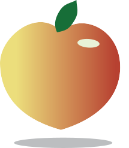
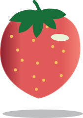
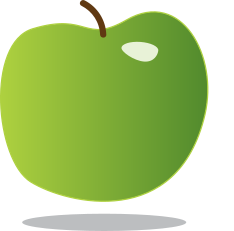

<!--
  Generated template for the Feed page.

  See http://ionicframework.com/docs/components/#navigation for more info on
  Ionic pages and navigation.
-->
<ion-header>

  <ion-navbar  color="peach" text-center>
    <ion-title>Feed</ion-title>
  </ion-navbar>

</ion-header>


<ion-content padding>
  
  <ion-item text-center no-lines>
  <br> <br> <br> <br> <br>Which food would you like to feed? <br> <br> 
</ion-item>
<ion-item no-lines>
  

<ion-grid text-center>
  <ion-row>
    <ion-col padding (click)="feed('peach')" > 
       
    </ion-col> 
    <ion-col padding (click)="feed('strawberry')" > 
       
    </ion-col>
        <ion-col padding (click)="feed('apple')" > 
       
    </ion-col>
  </ion-row>
</ion-grid>


</ion-item>

</ion-content>
